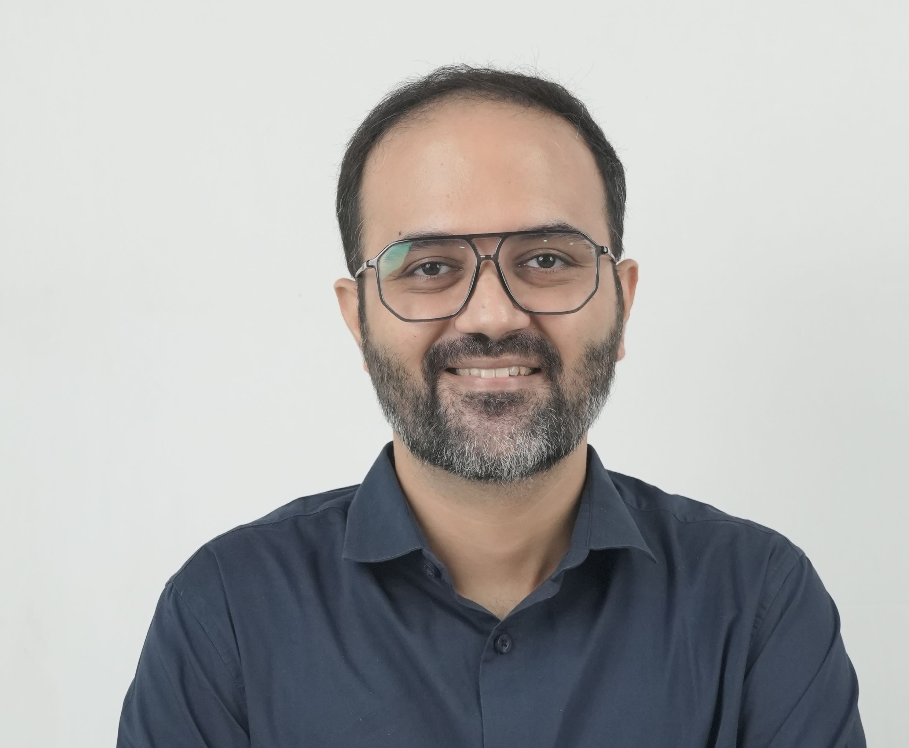

Over the past 14 years, I have shifted from executing analytics to building the engines that power them. Today, I lead Centers of Excellence, mentoring elite teams and arming central hubs with scalable, cutting-edge AI solutions. My work is rooted in delivering tangible, executive-level impact — driving almost $1 million in verified savings — from yielding €670K through OPEX efficiencies to generating over $250K via high-precision forecasting and commercial analytics. I am Abhay Joshi, and this is my story of never stopping.

After 14 years, the best data science doesn't live in a notebook. It lives in the decisions it changes.
Forecasting systems for supply chains, sales, and R&D — telling teams what will happen before the data confirms it.
Built Centers of Excellence from scratch. Hiring, mentoring, architecture, and convincing leadership to trust the numbers.
GenAI Adoption Lead. Finding use cases that save real money, building prototypes, training teams who've never touched an LLM.
7 years in pricing analytics across CPG giants. Elasticity models, promotion optimization, revenue management.
This isn't a standard résumé. This is the story of my evolution — from a service-industry analyst to leading a global Center of Excellence, scaling data across continents.
I began my journey in the service industry at TCS, operating as an Analytics Lead. Grinding through 60+ analytics projects, I managed pricing and promotion analytics for LATAM and supported European teams.
It was here that I learned how to translate raw data into strategic business goals, mastering the rigorous validation processes needed to support large enterprises. Winning the Nielsen 'Star of the Year' for three consecutive years taught me the value of sustained excellence.
The jump to product and FMCG giants was a defining pivot. At General Mills and PepsiCo, I evolved from delivering analysis to architecting advanced predictive models.
I built pricing elasticity tools and forecasting pipelines that influenced markets across Europe, Asia, and North America. Winning a National Sales Award in Canada for a forecasting solution that generated over $100K in annual savings taught me what it means to build systems that directly move the global bottom line.
Then came the ultimate challenge at L'Oréal: transitioning into a strategic leader. I founded and scaled the R&I India Data & AI Center of Excellence from scratch to a 16-member powerhouse.
We expanded our footprint across the SAPMENA region, delivering €670K in OPEX savings, building Bayesian simulators, and embedding GenAI platforms. As the GenAI Adoption Lead, my role transformed into architecting the teams and systems that power global innovation.
Reflecting on this evolution — from executing analytical projects to directing AI adoption for global hubs — the thread connecting it all is continuous upscaling.
Navigating the unique data landscapes of LATAM, Europe, North America, AMESA, and SAPMENA has taught me that while markets differ, the need for decisive action is universal. My mission remains to push the boundaries of AI, mentoring the next generation of data scientists along the way.
If you are an analyst wondering if the leap to leadership is possible — it is. Start building today.
Founded the R&I India Data & AI CoE. Delivered €670K in OPEX savings. Built GenAI consumer intelligence platform, Bayesian skin-aging simulator, patent-filed formulation framework. Won 'Hats Off' Award. Appointed GenAI Adoption Lead.
ARIMA-based demand forecasting for CPG. Automated data pipelines eliminating manual bottlenecks.
Led AMESA shipment forecasting. SARIMAX models at 82% accuracy. Clustering + Random Forest for targeted expansion.
85% accuracy forecasting. $150K pricing savings. 100+ analyst hours reclaimed. National Sales Award (Canada).
60+ projects. LATAM pricing analytics. Nielsen 'Star of the Year' 3 consecutive years. Multiple TCS Excellence Awards.
Probability theory, Bayesian estimation, matrix algebra — the math that became my ML foundation a decade later.
The problem: Sales engineers spend 30+ hours per RFP. That's $5K in labor for assembly work.
What I built: 3-agent system — Parser, Writer, Compliance Checker. FAISS vector search + few-shot prompting.
The bug: Silent infinite loop. Fixed with dedup hash + retry cap.
Multi-agent orchestration, vector retrieval, retry/dedup patterns, compliance validation.
The problem: Data teams burn 40% of time cleaning. Same mess every time.
What I built: AI that profiles data, writes cleaning code, runs it, fixes its own bugs. Autonomously.
The bug: Coder kept same bad logic. Fixed with error memory + strategy escalation.
AI writing/debugging code, self-correcting loops, Data Contracts, strategy escalation.
Teaches you to build systems, not just models. The evaluation chapter changed how I design agent loops.
ReadingThe bridge between notebook and production. Pipelines, monitoring, all the unglamorous infrastructure.
CompletedStrips ML to mathematical bones but explains it so clearly you retain it. My stakeholder translator.
CompletedFrame it. Map the workflow. Pick boring tech. Design for failure. Build in public. Five steps.
Framework5 examples in a prompt gets 80% quality, for free. Fine-tuning is for production. I learned this the expensive way.
LLMsA formal agreement on what good data looks like. The difference between "the code runs" and "the output is correct."
Data EngMid-career professional thinking about the leap? Hiring manager looking for someone who's done it? Let's talk.